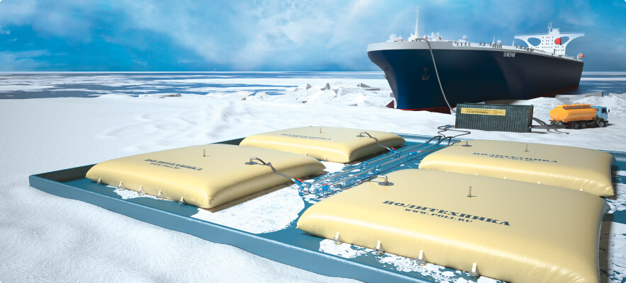
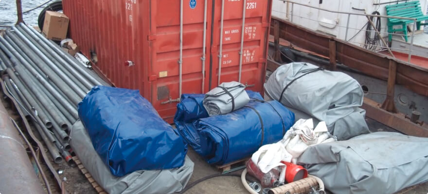
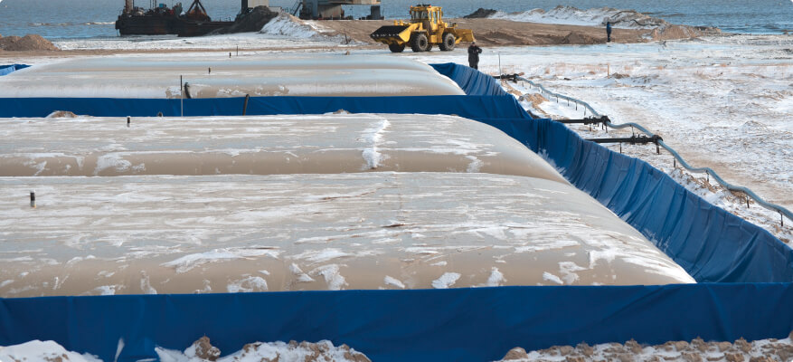
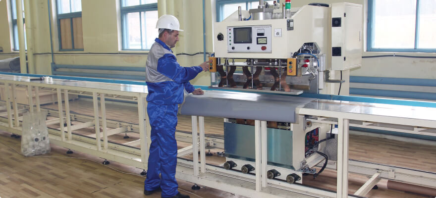
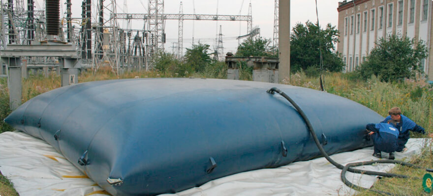
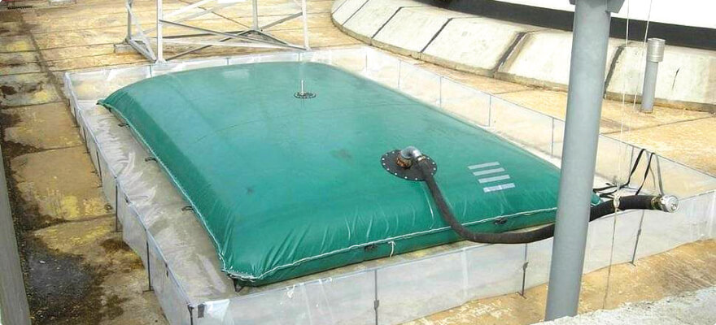

О компании
Технологические решения для хранения и транспортировки жидкостей от 6 л до 25 000 м3 на основе эластичных резервуаров.
Миссия
ООО «Научно-производственная фирма «Политехника» – российский лидер в области разработки и серийного производства композитных эластомеров и мягких резервуаров для нефтепродуктов и прочих наливных грузов.
История
Основание компании НПФ «Политехника» группой специалистов ВНИИ «Полиграфмаш» и «Центра научно-технической деятельности и социальных инициатив» Академии наук.

Одной из первых в России компанией освоен выпуск принципиально новый для отечественной нефтяной отрасли вид емкостей для хранения и транспортирования нефти и нефтепродуктов– передвижные эластичные резервуары.
Также начато серийное производство эластичных вкладных резервуаров для нефтеналивных судов из термопластичных и комбинированных барьерных материалов.
Впервые на российский рынок выведена инновационная линейка передвижных эластичных резервуаров - серия ПЭР-Н. Емкости нового поколения выполнены из морозоустойчивых термопластичных полиуретановых композитов, что сделало возможным широкое внедрение мобильных резервуарных парков и нефтебаз на территории РФ
Вначале внедрение происходило на магистральных продуктопроводах, а в дальнейшем — на многочисленных объектах освоения углеводородных месторождений и других запасов полезных ископаемых Сибири, Арктики и Крайнего Севера, а также при строительстве и освоении отдаленных объектов, таких как трубопроводы, нефтепромыслы, золотые прииски, рудники, вахтовые поселки, дороги и т.д
Открыта собственная производственная площадка. Производство оснащено уникальным оборудованием, предназначенным для работы с эластомерами, вулканизационными котлами, лабораторией, испытательными стендами, собственным токарным и слесарным участком, тарным цехом и автопарком.
На производственной базе компании также проводятся научно-практические семинары и факультативы, на которых специалисты знакомятся с новыми видами продукции, проходят обучение в освоении новой техники, технологий и их применения на практике.
ООО НПФ «Политехника» приступила к серийному выпуску полевых складов горючего (ПСГ) полной комплектации и различных объемов на базе эластичных резервуаров.
Осуществлена первая отгрузка мобильного полевого склада горючего (ПСГ) на Тагульское месторождение АО «Ванкорнефть».
В рамках контракта смонтировано 3 мобильных комплекса общей вместимостью 6 000 м³.
Отгружены полевые склады горючего (ПСГ) на базе полимерных эластичных резервуаров ПЭР-Н на площадку проекта строительства магистрального газопровода «Сила Сибири» (Восточный маршрут) для ООО «СтройГазКонсалтинг» и ЗАО «Стройтрансгаз».
Отгружен полевой склад горючего ПСГ-600 в адрес Минобороны РФ для проведения в Крыму учений по обеспечению группировки войск на морских и сухопутных полигонах в ПСГ отлично зарекомендовали себя при приемке, хранении и выдаче топлива и ГСМ в полевых условиях. В ходе учений было перекачано 510 т дизельного топлива на удалении 1500 м по морю и 400 м — по суше. Особое внимание было уделено участку массовой выдачи горючего (УМВГ).
При помощи УМВГ одновременно был произведен залив 10 единиц автотопливозаправщиков вместимостью 7000 литров каждый.
